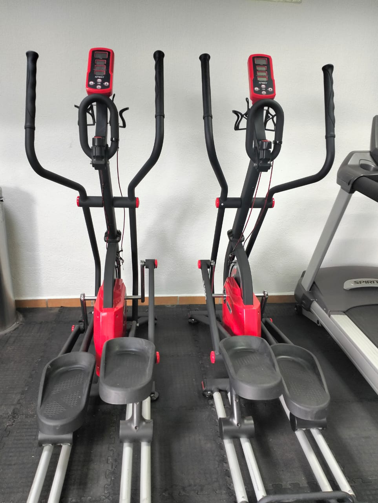
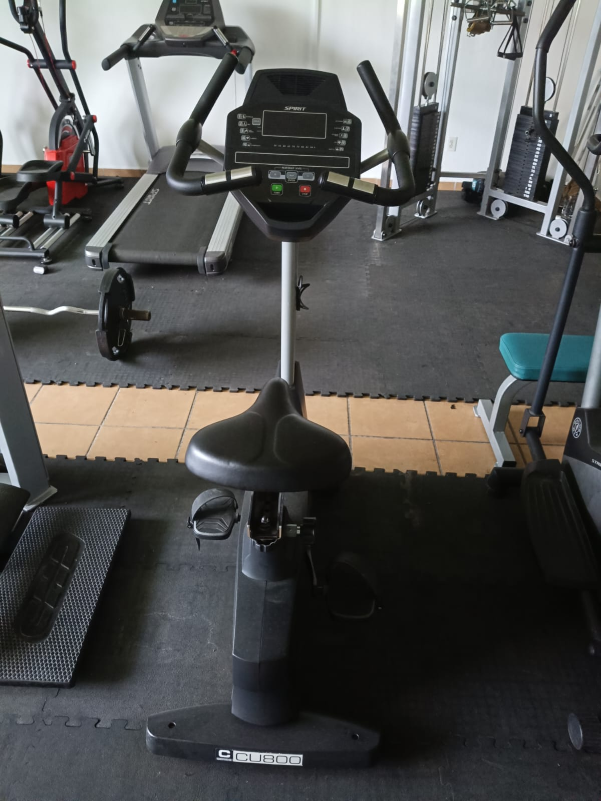
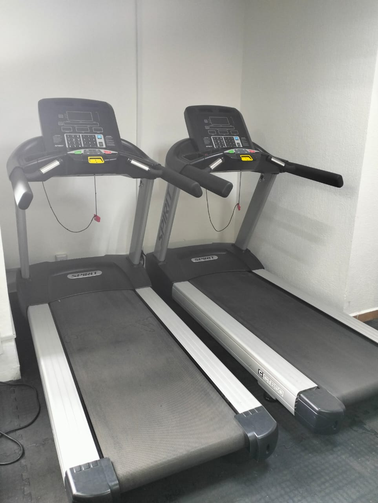

En este apartado se mostrarán los equipos que tiene el gimnasio
y algunas rutinas básicas que sean de su ayuda
Set de mancuernas
¿Qué es y para qué sirve?
Pesas individuales con discos ajustables o fijos, utilizadas para ejercicios de fuerza y tonificación, permitiendo trabajar casi todos los grupos musculares según el movimiento.
Partes del cuerpo que trabaja:
(bíceps, tríceps), hombros, pecho, espalda y piernas (dependiendo del ejercicio).
Rutina:
5 minutos de movilidad de articulaciones Ejercicio 1: Press de hombros (3 series de 10-12 repeticiones) Ejercicio 2: Curl de bíceps (3 series de 12-15 repeticiones) Ejercicio 3: Zancadas con mancuernas (3 series de 10 repeticiones por pierna) Descanso: 60-90 segundos entre series Enfriamiento: Estiramientos de brazos y piernas (5 minutos)
Máquina de polea para pierna
¿Qué es y para qué sirve?
Equipo diseñado para realizar ejercicios de fuerza en las piernas, utilizando un sistema de poleas y pesos, ideal para desarrollar músculos como cuádriceps, glúteos y femorales
Partes del cuerpo que trabaja
Cuádriceps, glúteos, femorales y pantorrillas (dependiendo del ejercicio)
Rutina
Calentamiento: 5 minutos de caminata ligera o movilidad de caderas Ejercicio 1: Prensa de piernas (3 series de 10-12 repeticiones) Ejercicio 2: Extensión de piernas (3 series de 12-15 repeticiones) Ejercicio 3: Curl de piernas (3 series de 10 repeticiones por pierna) Descanso: 60-90 segundos entre series Enfriamiento: Estiramientos de piernas (5 minutos)
Máquina de tracción
¿Qué es y para qué sirve?
Equipo con poleas y barras que permite realizar ejercicios de tracción para fortalecer la espalda y los brazos, ideal para dorsales y bíceps.
Partes del cuerpo que trabaja:
Dorsales, bíceps, hombros y parte media de la espalda.
Rutina:
Calentamiento: 5 minutos de movilidad de hombros y espalda. Ejercicio 1: Jalón al pecho (3 series de 10-12 repeticiones). Ejercicio 2: Remo en polea (3 series de 12-15 repeticiones). Ejercicio 3: Pulldown inverso (3 series de 10 repeticiones). Descanso:60-90 segundos entre series. Enfriamiento: Estiramientos de espalda y brazos (5 minutos).
Elíptica

¿Qué es y para qué sirve?
Máquina cardiovascular que simula caminar o correr con un movimiento elíptico, perfecta para mejorar la resistencia y tonificar piernas sin impacto fuerte.
Partes del cuerpo que trabaja:
Piernas (cuádriceps, femorales, glúteos), brazos y sistema cardiovascular.
Rutina:
Calentamiento: 5 minutos a baja intensidad. Cardio continuo (20 minutos alternando 1 minuto rápido y 1 minuto lento). Intervalos (5 ciclos de 30 segundos intensos y 1 minuto suave). Descanso activo con 2 minutos a ritmo lento. Enfriamiento: 5 minutos de pedaleo suave y estiramientos.
Bicicleta estática

¿Qué es y para qué sirve?
Equipo fijo que simula el ciclismo, utilizado para entrenamiento cardiovascular y fortalecimiento de las piernas.
Partes del cuerpo que trabaja:
Cuádriceps, femorales, glúteos y sistema cardiovascular.
Rutina:
Calentamiento: 5 minutos a baja resistencia. Cardio constante (15 minutos a intensidad moderada). 8 ciclos de 30 segundos alta resistencia y 1 minuto baja. Descanso: 2 minutos a ritmo suave. Enfriamiento: 5 minutos de pedaleo lento y estiramientos de piernas.
Máquina de peso muerto
¿Qué es y para qué sirve?
Equipo o barra con pesos para realizar levantamientos de peso muerto, fortaleciendo la cadena posterior y el core.
Partes del cuerpo que trabaja:
Femorales, glúteos, lumbar y core.
Rutina:
Calentamiento: 5 minutos de movilidad de cadera. Ejercicio 1: Peso muerto (3 series de 8-10 repeticiones). Ejercicio 2: Puente de glúteos (3 series de 12 repeticiones). Ejercicio 3: Plancha (3 series de 30 segundos). Descanso: 60-90 segundos entre series. Enfriamiento: Estiramientos de espalda baja (5 minutos).
Banco plano
¿Qué es y para qué sirve?
Superficie plana para realizar ejercicios de pecho, abdomen y brazos, como press de banca o abdominales.
Partes del cuerpo que trabaja:
Pecho, tríceps, hombros y abdomen.
Rutina:
Calentamiento: 5 minutos de movilidad de hombros. Press de banca con mancuernas (3 series de 10-12 repeticiones). Fondos en banco (3 series de 12-15 repeticiones). Abdominales (3 series de 15 repeticiones). Descanso: 60-90 segundos entre series. Enfriamiento: Estiramientos de pecho y abdomen (5 minutos).
Caminadora

¿Qué es y para qué sirve?
Equipo cardiovascular que simula caminar o correr, utilizado para mejorar la resistencia, quemar calorías y tonificar piernas.
Partes del cuerpo que trabaja:
Piernas (cuádriceps, femorales, glúteos), sistema cardiovascular.
Rutina:
Calentamiento: 5 minutos a velocidad baja. Caminata rápida (15 minutos a 5-6 km/h). Intervalos (5 ciclos de 1 minuto corriendo a 8 km/h y 1 minuto caminando). Descanso: Descanso activo con 2 minutos a paso lento. Enfriamiento: 5 minutos de caminata suave y estiramientos de piernas.
.jpeg)

.jpeg)
.jpeg)
.jpeg)